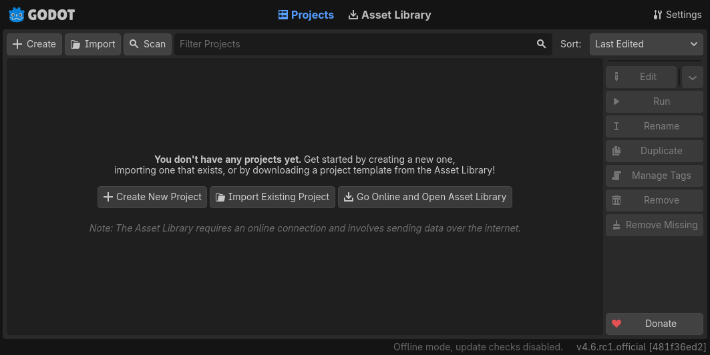
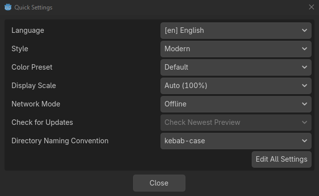
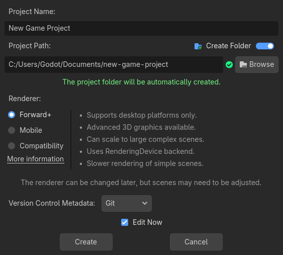
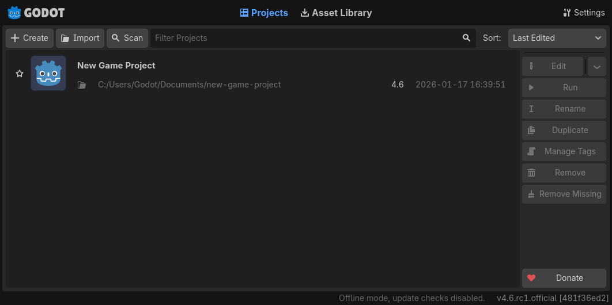
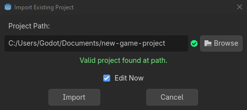
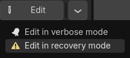

Sử dụng Project Manager
Khi bạn khởi chạy Godot, cửa sổ đầu tiên bạn thấy là Project Manager. Nó cho phép bạn tạo, xóa, import hoặc chạy các dự án game:

Để thay đổi ngôn ngữ của trình chỉnh sửa, nhấp vào nút Settings ở góc trên bên phải:

Trong Project Manager Settings, bạn có thể thay đổi ngôn ngữ giao diện từ menu thả xuống ngôn ngữ; mặc định là ngôn ngữ của hệ thống.
Bạn cũng có thể thay đổi theme và color preset của trình chỉnh sửa, display scale cho các kích thước thành phần giao diện khác nhau, và khả năng dùng các tính năng trực tuyến bằng network mode. Nếu network mode là online, Godot cũng sẽ kiểm tra và thông báo cho bạn về các phiên bản Godot mới.
Bạn cũng có thể thay đổi quy ước đặt tên thư mục để thay thế dấu cách theo định dạng đã chọn khi tự động tạo thư mục.

Tạo và import dự án
Để tạo dự án mới:
Nhấp vào nút Create ở góc trên bên trái cửa sổ.
Đặt tên cho dự án, rồi mở trình duyệt file bằng nút Browse, và chọn một thư mục trống trên máy tính để lưu các file. Ngoài ra, bạn có thể bật tùy chọn Create Folder để tự động tạo một thư mục con mới mang tên dự án, theo quy ước đặt tên thư mục đã đặt trong cài đặt. Một thư mục trống sẽ hiển thị dấu tích xanh ở bên phải.
Chọn một trong các renderer (có thể thay đổi sau).
Nhấp vào nút Create để tạo thư mục dự án và mở nó trong trình chỉnh sửa.

Ghi chú
Bạn có thể tùy chọn chọn một hệ thống quản lý phiên bản. Hiện tại, chỉ git được hỗ trợ và cần cài đặt Godot Git Plugin, hoặc thủ công hoặc qua Asset Library. Để tìm hiểu thêm về Godot Git Plugin, xem wiki của nó.
Sử dụng trình duyệt file
Từ cửa sổ Create New Project, nhấp vào nút Browse để mở trình duyệt file của Godot. Bạn có thể chọn một vị trí hoặc gõ đường dẫn thư mục vào trường Path, sau khi chọn ổ đĩa.
Bên trái trường đường dẫn ở hàng trên cùng có các mũi tên để lùi và tiến qua các vị trí đã truy cập gần đây. Mũi tên lên điều hướng đến thư mục cha. Ở bên phải trường đường dẫn có các nút để làm mới nội dung thư mục hiện tại, đánh dấu/bỏ đánh dấu yêu thích thư mục hiện tại, và hiện/ẩn các thư mục ẩn.
Tiếp theo là các nút để chuyển kiểu hiển thị thư mục và file giữa dạng lưới và dạng danh sách.
Nút cuối cùng ở bên phải sẽ tạo một thư mục mới.
Các thư mục yêu thích sẽ được hiển thị ở bên trái trong mục Favorites. Bạn có thể sắp xếp các mục yêu thích bằng các nút lên và xuống trong mục này. Các thư mục được chọn gần đây sẽ được liệt kê trong danh sách Recent.

Mở và import dự án
Lần tới khi mở Project Manager, bạn sẽ thấy dự án mới của mình trong danh sách. Nhấp đúp vào nó để mở trong trình chỉnh sửa.

Tương tự, bạn có thể import các dự án có sẵn bằng nút Import. Tìm đến thư mục chứa dự án hoặc file project.godot để import và chỉnh sửa nó.

Ngoài ra, bạn có thể chọn một file zip để Godot tự động giải nén.
Khi đường dẫn thư mục đúng, bạn sẽ thấy một dấu tích màu xanh lá.

Tải về demo và template
Từ tab Asset Library, bạn có thể tải về các template dự án và demo mã nguồn mở từ Asset Library để giúp bạn bắt đầu nhanh hơn.
Lần đầu mở tab này, bạn sẽ thấy nó yêu cầu bạn kết nối trực tuyến. Vì lý do quyền riêng tư, project manager và trình chỉnh sửa Godot không thể truy cập internet theo mặc định. Để cho phép truy cập internet, nhấp vào nút Go Online. Việc này cũng cho phép project manager thông báo cho bạn về các bản cập nhật. Nếu muốn tắt tính năng này sau này, hãy vào cài đặt project manager và đổi Network Mode thành "Offline"
Giờ Godot đã kết nối internet, bạn có thể tải về một demo hoặc template. Để làm việc này:
Nhấp vào tiêu đề của nó.
Trên trang vừa mở, nhấp vào nút tải về.
Khi tải xong, nhấp install và chọn nơi bạn muốn lưu dự án.

Chế độ khôi phục (Recovery Mode)
Nếu một dự án bị crash ngay khi khởi động, hoặc crash thường xuyên trong lúc chỉnh sửa, bạn có thể mở nó ở chế độ khôi phục để cố gắng làm nó ổn định hơn trong khi tìm nguyên nhân gây crash để sửa.
Thông thường một dự án sẽ tự động mở ở chế độ khôi phục khi bạn mở lại nó sau khi bị crash. Nếu không, bạn có thể tự mở chế độ khôi phục bằng cách chọn dự án trong project manager: chọn dự án từ danh sách dự án, nhấp vào nút thả xuống cạnh nút edit, và chọn Edit in recovery mode.

Trong chế độ khôi phục, những thứ sau bị vô hiệu hóa:
Tool script
Plugin của trình chỉnh sửa
Addon GDExtension
Tự động khôi phục scene
Chạy dự án
Bạn nên sao lưu dự án trước khi chỉnh sửa nó ở chế độ khôi phục.